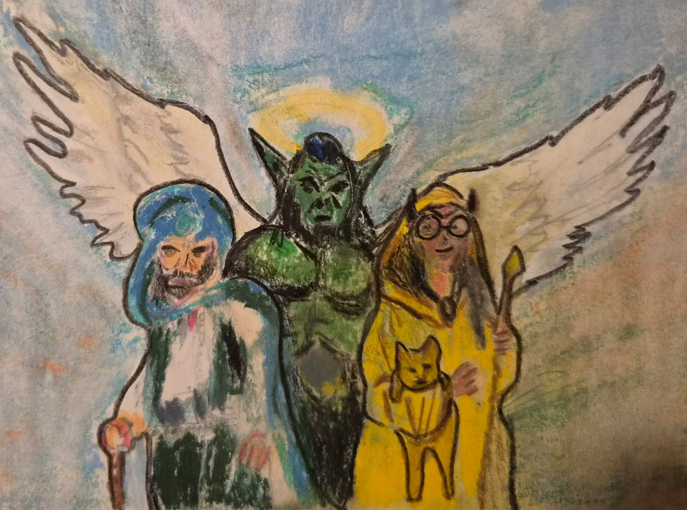
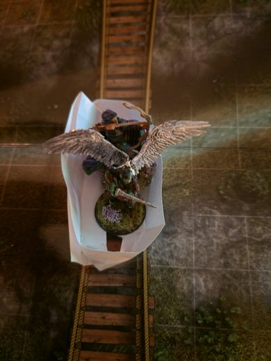
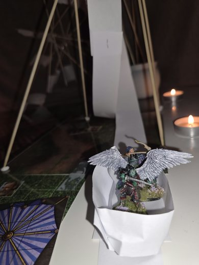
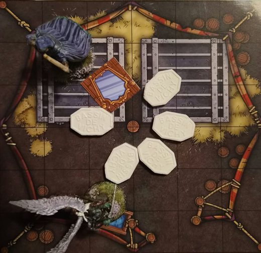

Chroniques du Vieux Royaume

Bienvenue sur le site des joueurs.
Chroniques du Vieux Royaume est une campagne de jeu de rôle sur table, qui se déroule dans le Vieux Royaume, l'univers de fiction créé par l'écrivain Jean-Philippe Jaworski. Elle part des documents de jeu que l'auteur a publiés sur son site pour ce jeu de rôle : la chronique du Vieux Royaume, la ville de Bourg-Preux et les scénarios. Le reste, ce sont nos propres aventures.
Ici, vous trouverez le journal de nos sessions, les fiches des héros, les personnages rencontrés, les lieux visités, les quêtes en cours et la chronologie du monde.
Ce site est un projet de fans, sans but lucratif. Il n'est ni officiel, ni lié à Jean-Philippe Jaworski ou à ses éditeurs. Le Vieux Royaume et ses textes restent la propriété de leurs auteurs.
Les documents de jeu publiés sur La Cour d'Obéron portent la mention « Toute reproduction interdite sans autorisation ». Nous n'avons pas demandé cette autorisation : en toute rigueur, les réutiliser ici, même résumés ou réécrits, n'est donc pas permis. Nous espérons que cela ne posera pas de problème, et nous retirerons tout contenu sur simple demande.
Dernière aventure : Arc 7 : La fête des Mille Merveilles (en cours)








- Aldaron revient de Thalassyr avec Bort pour la fête.
- Avec la paix, la fête foraine apparaît près de Garches.
- Montagnes russes, carrières souterraines.
- La fête emprisonne les souvenirs. Cycle de l'oubli et de la guerre.
- Dans la dernière attraction, les héros rencontrent la Révérende Mère Alba, immortelle, qui est derrière la fête.
- Le magicien Basilio Smemorato veut capturer Kila. Les héros l'en empêchent mais se font voler.
- « À suivre... »